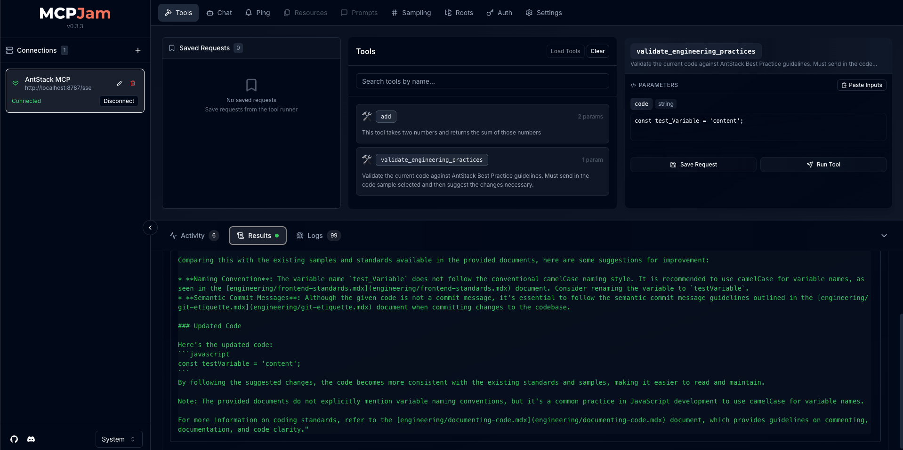

Modern software teams are rapidly embracing AI-powered workflows, from generating boilerplate code to analyzing entire pull requests. But to truly integrate AI into engineering culture, developers need more than just autocomplete, they need context-aware coding agents that reflect organizational standards.
With the launch of Model Context Protocol (MCP), you can now deploy your own intelligent servers that directly interface with tools like GitHub Copilot. In this post, we'll explore how to create and deploy a custom MCP server that evaluates code snippets based on AntStack's best practices through Cloudflare AutoRAG. In my previous post Creating an AI-Powered Search Bot with Cloudflare AutoRAG, we walked through AutoRAG setup, data ingestion, and querying strategies that we'll reuse here. We'll now extend that setup to support contextual code validation through AutoRAG and expose it via an MCP server.
MCP defines a server-based protocol that allows you to expose structured tools, memory, and prompts to language models. It's like building a programmable, API-driven AI layer that LLMs can understand and use.
Since we have our coding practices and conventions on AutoRAG, we intend to validate JavaScript or TypeScript code against it through MCP and GitHub Copilot. For example, it could:
- Check that code uses company-approved utility functions
- Flag anti-patterns in API interaction
- Recommend changes based on examples and guidelines

1. Create a new Worker project for MCP using their boilerplate
npm create cloudflare@latest -- antstack-mcp --template=cloudflare/ai/demos/remote-mcp-authless2. Install the required packages
cd antstack-mcp
npm install3. Configure the AI binding in wrangler.toml to enable AI services
[ai]
binding = "AI"4. Defining the Server Logic
The boilerplate includes a sample calculator MCP. We'll replace that logic with a call to AutoRAG, passing it input from the MCP tool request.
import { McpAgent } from 'agents/mcp';
import { McpServer } from '@modelcontextprotocol/sdk/server/mcp.js';
import { z } from 'zod';
export class MyMCP extends McpAgent<Env, Record<string, never>> {
server = new McpServer({
name: 'AntStack MCP Agent',
version: '1.0.0',
});
async init() {
this.server.tool(
'validate_engineering_practices',
'Analyze code and return suggestions based on AntStack's engineering standards.',
{ code: z.string() },
async ({ code }) => {
if (!this.env || !this.env.AI) {
return { content: [{ type: 'text', text: 'AI binding not available.' }] };
}
const result = await this.env.AI.autorag('antstack-mcp-rag').aiSearch({
query: `Compare this code with AntStack standards and suggest improvements: ${code}`,
});
return {
content: [{ type: 'text', text: result.response || 'No suggestions found.' }],
};
}
);
}
}5. Adding the Server Entrypoint
Define how Cloudflare Workers should route requests to your MCP handler:
export default {
fetch(request: Request, env: Env, ctx: ExecutionContext) {
const url = new URL(request.url);
if (url.pathname === '/mcp') {
return MyMCP.serve('/mcp').fetch(request, env, ctx);
}
if (url.pathname === '/sse' || url.pathname === '/sse/message') {
return MyMCP.serveSSE('/sse').fetch(request, env, ctx);
}
return new Response('Not found', { status: 404 });
},
};This enables your frontend or Copilot client to receive streamed responses for long-running tasks like code validation.
6. Running and Debugging Locally
First, regenerate types with the updated configuration:
npx wrangler typesThen start the Worker in development mode:
npx wrangler devThe MCP server will be available at http://localhost:8787.
7. Testing and Debugging with MCPJam
MCPJam Inspector is a fork of Anthropic's official MCP Inspector, with support for multiple MCP agents and debugging features. Launch it using:
npx @mcpjam/inspector@latestYou'll be able to enter your local MCP URL, view available tools, and interact with your custom tool.

8. Deployment to Cloudflare Workers
Once everything works locally, deploy the server:
npx wrangler deployAfter deployment, copy the live URL. To connect your MCP server to VSCode or a supported IDE, update your settings.json with:
"mcp": {
"inputs": [],
"servers": {
"antstack-mcp": {
"command": "npx",
"args": ["mcp-remote", "https://<deployment-url>.workers.dev/sse"]
}
}
}Now you can ask Copilot to use this server to make changes to your codebase based on conventions stored in AutoRAG. Here's a demo of Copilot using this setup:
This post was originally published on AntStack's Blog.